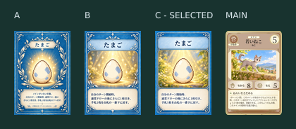
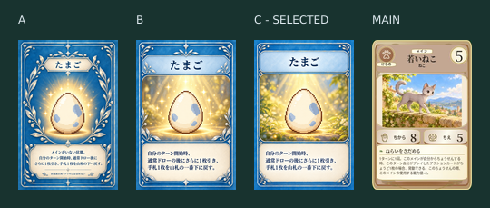
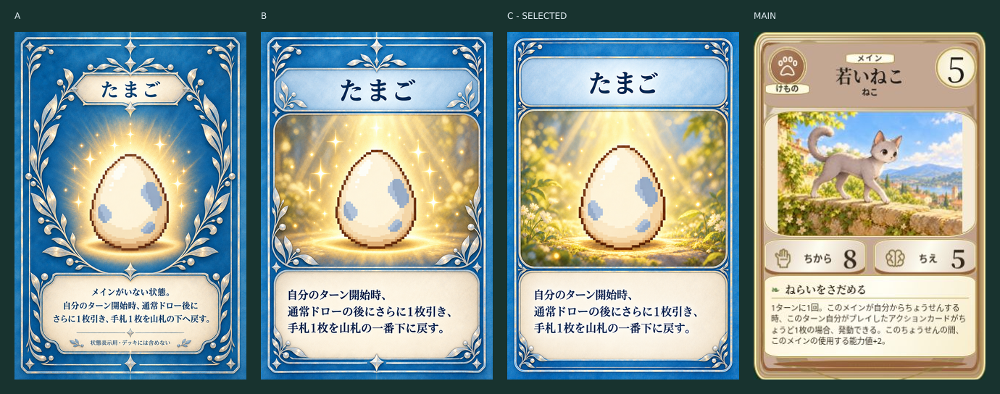
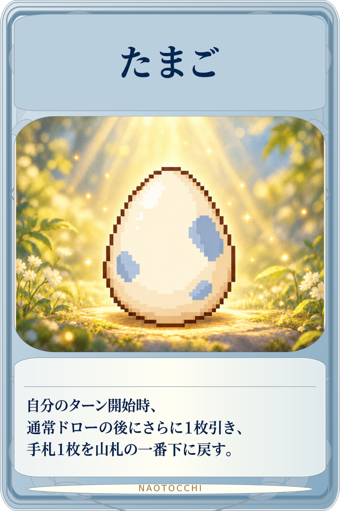

A：改訂前 ／ B：メインカード準拠 ／ C：準拠＋控えめ装飾。右端は正式採用済みメインカードの保存画像です。
丸い外枠、タイトル帯、独立したイラスト・効果欄へ統一。Cは銀葉を四隅へ整理し、たまごを主役にしました。時コスト・ちから・ちえは付けません。
本文：自分のターン開始時、通常ドローの後にさらに1枚引き、手札1枚を山札の一番下に戻す。
A：改訂前 ／ B：メインカード準拠 ／ C：準拠＋控えめ装飾。右端は正式採用済みメインカードの保存画像です。
丸い外枠、タイトル帯、独立したイラスト・効果欄へ統一。Cは銀葉を四隅へ整理し、たまごを主役にしました。時コスト・ちから・ちえは付けません。
本文：自分のターン開始時、通常ドローの後にさらに1枚引き、手札1枚を山札の一番下に戻す。




縮小比較は画像検査用です。iPhone Safari実機QAは別途必要です。